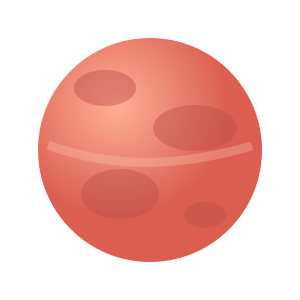
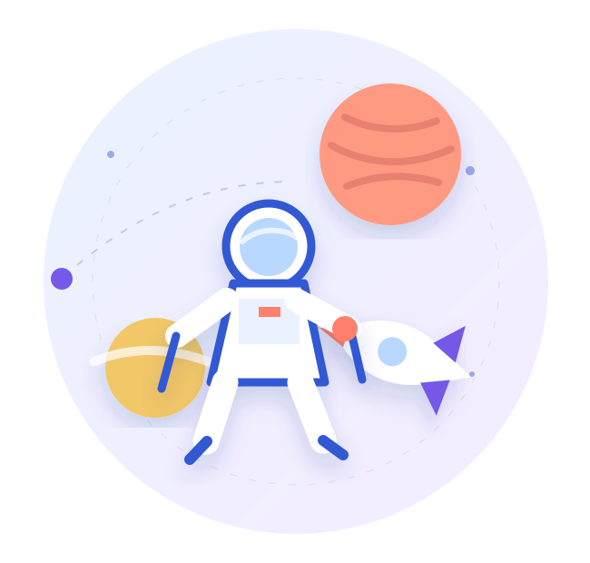
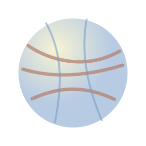
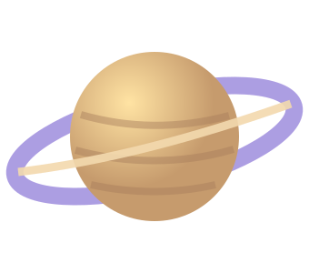

01Planeta rocoso
Marte
Valles, volcanes y la posibilidad de reconstruir la historia de un mundo que alguna vez tuvo agua.
Explorar destino ↗Bitácora 09 Explora sin límites
Viaja por mundos extraordinarios, conoce misiones científicas y convierte cada pregunta en una nueva coordenada.
Comunidad curiosa
Aprendizaje para futuros exploradores.

Atlas visual Destinos destacados

01Planeta rocoso
Valles, volcanes y la posibilidad de reconstruir la historia de un mundo que alguna vez tuvo agua.
Explorar destino ↗
02Luna oceánica
Bajo su superficie helada podría existir un océano global y condiciones para la vida.
Explorar destino ↗
03Gigante gaseoso
Un laboratorio natural de anillos, tormentas y lunas con paisajes sorprendentes.
Explorar destino ↗Perspectiva orbital Del espacio a la Tierra
Esta visualización utiliza datos de misiones espaciales para realizar un acercamiento desde la órbita hasta la superficie terrestre.
Aprendizaje activo De pregunta a misión
NovaQuest organiza información científica en recorridos breves y visuales. La maqueta está preparada para crecer después con favoritos, contenido sin conexión y notificaciones.
Filtra mundos por categoría e interés.
Conoce su objetivo y dificultad.
Una futura PWA podrá conservar tu avance.
Siguiente coordenada Tu viaje